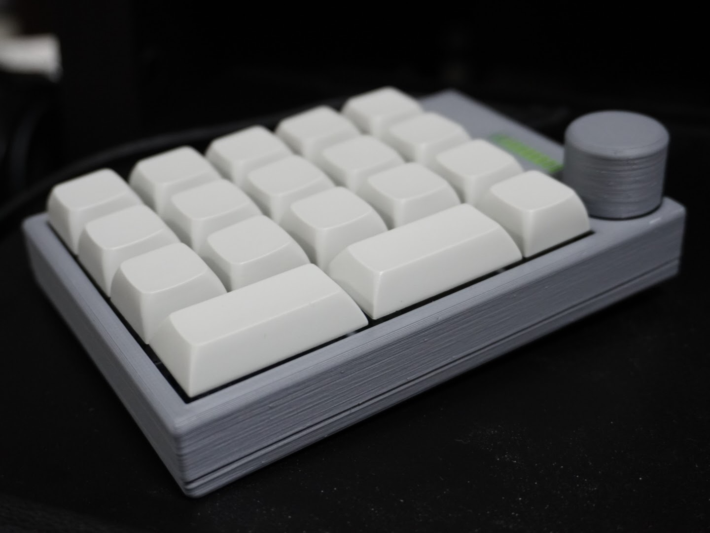

MagLevスイッチ/デモキーボード


adafruit社より市販されているAdafruit Feather nRF52840 Express をベースに、ボタン電池で駆動する電源回路、スイッチ、フルカラーLED(NeoPixel)を追加した小型開発ボードです。 ボタン電池で駆動するため、落とし物タグやリモートシャッターボタンのようなものも開発可能です。 Adafruitの製品と互換性があるため、CircuitPythonでも動作します。 設計図はGitHubで公開しています。
ダウンロード: GitHub
日常生活の中で3Dプリンタを実用した例を #本日の3Dプリンティング というタグをつけてTwitterで投稿しています(まだ僕しかこのタグ使ってませんが、つけたい方はは自由に使ってください！)。汎用性のある、他の方々にも使っていただけそうなものは各ツイートのリプライ欄にてThingiverseで公開しています。 過去の投稿は以下のモーメントにまとめています。
Twitterモーメント: 本日の3Dプリンティング
光造形プリンタで作成した造形物を乾燥させるための送風機です。PCようのファンとATtiny85で作成しました。風量は3段階に調節可能で、電源はType-C(PD 12V)で動くようになっています。 縦置き横置き両対応で、下はすのこ状になっているため下側も乾燥させることができます。風量のLEDインジケータは手芸用クリアレジンを使うことで、縦横両方から見やすい角配置にしました。
Twitterモーメント: 光造形プリンタようの造形物乾燥機制作過程
E-ink搭載ESP32開発ボードを使った3Dプリンタ製防水時計です。FFFタイプの3Dプリンタで作った樹脂部品と市販のOリングでIPX5程度の防水が可能でした(耐久性は不明)。ESP32のWi-Fi機能を使い、時刻と天気を自動取得します。 …が、バッテリ持ちが悪く、満足行く前に放置してしまっています。
Twitterモーメント: E-ink防水時計の制作過程
digiStump社より市販されているDigisparkをベースに、 ワニ口クリップで接続できるIOや、タクトスイッチ、フルカラーLED(NeoPixel)、ストラップホールなどを搭載した開発ボードです。 本当はプログラミングイベントなどで配布したかったのですが、コロナ禍で頓挫してしまったプロジェクトです。。 この制作物はオンライン開催となった MakerFaireKyoto 2020にて公開しました。

シャフトを省くすべての部品を3Dプリンタで作成したネジの要らないオムニホイールです。市販品の小型オムニと同等のサイズでありながら、 安価に使えるものを目指しました。各部品がモジュール化されており、破損時に部品ごとに交換が可能であるという 特徴もあります。CADデータは無料ダウンロード可能です。 この制作物はMakerFaireKyoto 2019 にて展示しました。
開発録: 簡単オムニホイール
ダウンロード: PRUSA PRINTERS Thingiverse
Bluetoothでスマートフォンと接続が可能な電源タップです。接続したデバイスを介して、 3つの電源を個別にオン/オフすることができます。基本的にはArduinoとBluetoothモジュール、SSRを繋げたものです。 この制作物はGUGEN2018にて展示しました。
ドアや引き出しなどに設置し、動きがあったときに音楽を流すことができるおもちゃです。当時ゼルダの伝説の一番くじで似たようなモノがあり、 それが当たらなくて悔しすぎたので自作しましたｗ ゲームやアニメなどで流れる効果音を、家の扉や引き出しからも流すことができます。Micro SDカードスロットを搭載していて、 自分の好きな効果音を設定することができます。ATtiny85で開発しました。
USB機器を接続する機器を切り替えることができるガジェットです。入力は1つ、出力は2つで、USB2.0までに対応しています。
シングルボードPC「Rock64」専用のアクリルケースです。レーザ加工機のみで制作が可能です。 電源ボタンとリセットボタンのカバーまでアクリル板で作ってみました。